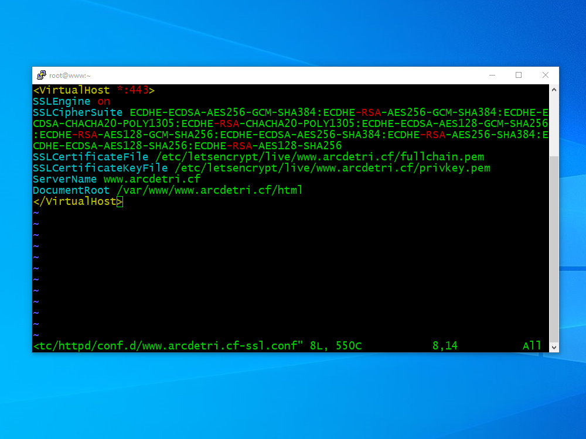

September 24, 2019
V2Ray+WebSocket+TLS+CDN Server on CentOS 8
V2Ray is a multi-featured networking tool that offers:
- Multiple inbound and outbound proxies
- Customizable routing
- Multiple protocols
- Obfuscation support
- Reverse proxy support
- Multiple platforms
You can find the official V2Ray manual at https://www.v2ray.com.
This post describes the installation of a V2Ray server on a virtual private server (VPS). The V2Ray client communicates with the server via WebSocket (WS). The IP address of the server is hidden by a content distribution network (CDN). The procedure was tested on a VPS with 1 GB of Random Access Memory (RAM) running CentOS 8. The client for this test was a PC running V2RayN, which is Windows GUI that is a separate project from the main V2Ray core project.
Create Domain Name and VPS
Start by registering a domain name for your web site. We will use a free name from https://www.freenom.com, and the example domain name used in the rest of this post will be arcdetri.cf.
Obtain a CentOS 8 virtual private server (VPS). Some popular providers are Bandwagon Host (搬瓦工) and Google Compute Engine (GCE), but you can use a different VPS provider if you prefer..
Note down the server's IP address. We will use as an example the IP address 168.168.168.168.
Back at your domain name registrar, which for us is https://www.freenom.com, add a DNS A record pointing from your server host name (e.g. www, type A, time-to-live 3600 seconds) to your server IP address (e.g. 168.168.168.168). Save these changes.
Tune Server
SSH into your server from a terminal emulator (from Linux or macOS) or a tool such as PuTTY, NetSarang XSHELL, or PowerShell (from Windows). If your DNS records have had time to propagate, you can use the server's hostname. For example:
ssh root@www.arcdetri.cf
Otherwise, you must use the server's IP address. For example:
ssh root@168.168.168.168
Start by getting your server's existing software packages up to date:
yum update
Change the password to something only you know:
passwd root
The Bottleneck Bandwidth and Round-trip propagation time (BBR) congestion control algorithm tracks a connection's delivery rate and round-trip time to offer higher throughput and lower queueing delays where there are network bottlenecks. BBR has been supported by Linux since kernel version 4.9. Since CentOS 8 is based on Linux kernel 4.18, we can use it here. Create a new system control parameters file for BBR:
vi /etc/sysctl.d/60-bbr.conf
Press the i key on your computer keyboard to enter insert mode. Insert the lines that specify the BBR congestion control algorithm:
net.core.default_qdisc=fq
net.ipv4.tcp_congestion_control=bbr
Press the Esc key on your computer keyboard followed by :wq to write the file to disk and quit the editor. Activate these changes:
sysctl -p /etc/sysctl.d/60-bbr.conf
If your VPS hostname is not yet set to your chosen hostname, then set it now:
hostnamectl set-hostname www.arcdetri.cf
Add the actual hostname to your /etc/hosts file.
vi /etc/hosts
Add a new line:
127.0.0.1 www.arcdetri.cf
Write the file to disk, and quit the editor.
Reboot to make the hostname change effective:
reboot
You may need to wait several minutes for the server to fully reboot, otherwise you will get a Connection refused message. When the reboot is complete, log on to your server again:
ssh root@www.arcdetri.cf
Verify that your tuning changes have persisted across reboots:
sysctl net.core.default_qdisc
sysctl net.ipv4.tcp_congestion_control
hostname
Configure Firewall
FirewallD may already be active (running). You can check this with the command:
systemctl status firewalld
If not, then install and start FirewallD:
yum install firewalld
systemctl enable firewalld
systemctl start firewalld
Now that it is active (running), we will use the FirewallD trusted zone to whitelist your own IP address for access to SSH. You will need to substitute in the actual public IP address of your workstation. You can get your workstation's public IP address by opening a browser and visiting a site such as https://whatismyipaddress.com or https://www.ipip.net/ip.html. The commands below use an example workstation IP address of 11.22.33.44, which is represented in classless interdomain routing (CIDR) notation as 11.22.33.44/32. If you do not have a fixed IP address, but your IP address always comes from a certain block, you can substitute a CIDR range such as 11.22.00.00/16. In some cloud providers, you must also open port 22 in the VPS's Security Group.
firewall-cmd --permanent --zone=trusted --add-service=ssh
firewall-cmd --permanent --zone=trusted --add-source=11.22.33.44/32
firewall-cmd --reload
firewall-cmd --zone=trusted --list-all
We now prevent any other public IP addresses from reaching port 22 (the SSH port) by removing the ssh service from the public zone:
firewall-cmd --permanent --zone=public --remove-service=ssh
firewall-cmd --reload
firewall-cmd --zone=public --list-all
Install Web Server
We are going to use Apache for our web server, although you could alternatively use Nginx. In either case, you must first open the firewall ports 80 (the HTTP port) and 443 (the HTTPS port):
firewall-cmd --permanent --zone=public --add-service=http
firewall-cmd --permanent --zone=public --add-service=https
firewall-cmd --reload
firewall-cmd --zone=public --list-all
In certain cloud providers, you must also open the necessary ports in the VPS's Security Group.
Now install the Apache web server:
yum install httpd
systemctl enable httpd
systemctl start httpd
Create a directory for your Apache virtual host's HTML:
mkdir -p /var/www/www.arcdetri.cf/html
Create a configuration file for your Apache virtual host:
vi /etc/httpd/conf.d/www.arcdetri.cf.conf
Insert your virtual host definition. You can start with a minimal virtual host definition like this:
<VirtualHost *:80>
ServerName www.arcdetri.cf
DocumentRoot /var/www/www.arcdetri.cf/html
</VirtualHost>
Write the file to disk, and quit the editor.

Restart the web server:
systemctl restart httpd
Verify that the service is running with the following command:
systemctl status httpd
You should see a status of active (running).
Add Web Content
Now create your web site content in the /var/www/www.arcdetri.cf/html directory. For the sake of this post, we will use some sample content:
yum install wget zip unzip
wget https://github.com/arcdetri/sample-blog/archive/master.zip
unzip master.zip
cp -rf sample-blog-master/html/* /var/www/www.arcdetri.cf/html/
When you have added your content, you can open a browser and visit the HTTP version of your website to confirm that your web server is working. In our example, this would be:
http://www.arcdetri.cf
Obtain Let's Encrypt SSL Certificate
Now install the Let’s Encrypt certificate bot:
wget https://dl.eff.org/certbot-auto
mv certbot-auto /usr/local/bin/certbot-auto
If you are using sudo rather than the actual root user, you must change the ownership of /usr/local/bin/certbot-auto to root at this stage. In either case, carry on by restricting the permissions on it:
chmod 0755 /usr/local/bin/certbot-auto
To fix an apparent bug concerning a missing file when creating a virtual environment, issue the additional command:
yum install python3-virtualenv
Now request a certificate for your hostname:
/usr/local/bin/certbot-auto certonly --apache -d www.arcdetri.cf
Some additional dependencies will be installed first. Then, in response to the prompts, answer the questions:
- Enter your email address
- Enter
afor agree - Enter
yornfor emails, as you prefer
Another apparent bug gives an error message referring to /etc/httpd/conf.d/ssl.conf. Fix this error by deleting the erroneous configuration file and rerunning the Certbot command:
rm /etc/httpd/conf.d/ssl.conf
/usr/local/bin/certbot-auto certonly --apache -d www.arcdetri.cf
Continuing to use the hostname www.arcdetri.cf as our example, Certbot places the certificates and key in:
/etc/letsencrypt/live/www.arcdetri.cf/fullchain.pem/etc/letsencrypt/live/www.arcdetri.cf/privkey.pem
Set up Certbot to automatically renew the certificate every three months. The following line will add a cron job to the default crontab.
echo "0 0,12 * * * root python -c 'import random; import time; time.sleep(random.random() * 3600)' && /usr/local/bin/certbot-auto renew" | sudo tee -a /etc/crontab > /dev/null
Create HTTPS Virtual Host Using SSL Certificate and Key
Edit your HTTP (port 80) virtual host configuration file. In our example, that is:
vi /etc/httpd/conf.d/www.arcdetri.cf.conf
Add a line to redirect HTTP requests to HTTPS:
Redirect / https://www.arcdetri.cf
Write the file to disk, and quit the editor.
Now create a new virtual host file for your HTTPS virtual host:
vi /etc/httpd/conf.d/www.arcdetri.cf-ssl.conf
Insert your virtual host definition. You can start with a minimal virtual host definition like this. As always, replace www.arcdetri.cf by your actual hostname.
<VirtualHost *:443>
SSLEngine on
SSLCipherSuite ECDHE-ECDSA-AES256-GCM-SHA384:ECDHE-RSA-AES256-GCM-SHA384:ECDHE-ECDSA-CHACHA20-POLY1305:ECDHE-RSA-CHACHA20-POLY1305:ECDHE-ECDSA-AES128-GCM-SHA256:ECDHE-RSA-AES128-GCM-SHA256:ECDHE-ECDSA-AES256-SHA384:ECDHE-RSA-AES256-SHA384:ECDHE-ECDSA-AES128-SHA256:ECDHE-RSA-AES128-SHA256
SSLCertificateFile /etc/letsencrypt/live/www.arcdetri.cf/fullchain.pem
SSLCertificateKeyFile /etc/letsencrypt/live/www.arcdetri.cf/privkey.pem
ServerName www.arcdetri.cf
DocumentRoot /var/www/www.arcdetri.cf/html
</VirtualHost>
Write the file to disk, and quit the editor.

Edit the main Apache configuration file:
vi /etc/httpd/conf/httpd.conf
Make Apache listen on port 443 as well as the existing port 80 by inserting a line:
Listen 443
Write the file to disk, and quit the editor.
Restart the web server:
systemctl restart httpd
You can now visit the HTTPS version of your website in a browser to confirm that your web server is working. In our example, the URL would be:
https://www.arcdetri.cf
Optionally, you can further test your server's SSL configuration at https://www.ssllabs.com/ssltest/.
Add Domain to CDN
Now you can add your domain to a Content Distribution Network (CDN). We will use Cloudflare in this example. Open a browser and visit https://www.cloudflare.com.
Sign up and create an account. Add your domain. Look for a verification email, and click the Verify email link.
When asked which plan you want for your domain, select the Free plan and click Confirm plan.
The existing DNS records are retrieved from your registrar. Click Continue.
Cloudflare displays your new nameservers. There are two of them. They will look something like edwina.ns.cloudflare.com and freddie.ns.cloudflare.com.
Copy the Cloudflare nameservers across to your registrar. In our example of https://www.freenom.com, the process would be:
- Log on to https://www.freenom.com.
- Under Services, select My Domains.
- Click Manage Domain.
- Under Management Tools, select Nameservers.
- Select Use custom nameservers. Enter the two nameservers you were given by Cloudflare. Click Change nameservers.
- You see a message to say nameservers were successfully changed.
Back on the Cloudflare site, click the button saying you have changed your nameservers and they can now be checked. You will see a message telling you to wait a few hours until your changes have been successfully propagated and checked.
Once you have waited the required length of time, open a command prompt on your workstation (a Windows PC in this example) and check your server's apparent IP address by issuing the command:
nslookup www.arcdetri.cf
Instead of your server's actual IP address, the above command should now show Cloudflare IP addresses. These are listed at https://www.cloudflare.com/ips/.
Generate Secret Directory Name
So far, we have an ordinary web site. Now we will configure the web server to pass traffic to V2Ray when the client issues a request for a secret directory. Create your secret directory name with the command:
head /dev/urandom | tr -dc a-z0-9 | head -c 16 ; echo ''
You will get a result such as:
9w2daxsrop8yibtj
We will use 9w2daxsrop8yibtj as our example secret directory when we configure V2Ray, Apache, and V2RayN in a moment.
Install V2Ray
To install V2Ray, download and execute the V2Ray installation script:
wget https://install.direct/go.sh
bash go.sh
A default PORT and UUID are displayed toward the end of the install. The UUID is effectively a password and will need to be known by the client when we set it up. They will look something like this:
PORT:36711
UUID:450f02d5-dea0-457d-b055-ed807e8dc21d
Edit the V2Ray configuration file /etc/v2ray/config.json:
vi /etc/v2ray/config.json
In the inbound specification, after the port number line, add a new line to specify that V2Ray should listen on localhost:
"port": 36711,
"listen": "127.0.0.1",
After the end of the existing inbound settings section:
- Add a comma after the closing curly brace
- Add a new section for
streamSettings
The streamSettings section should look like this. You will need to replace 9w2daxsrop8yibtj by your actual secret directory name.
"streamSettings": {
"network": "ws",
"wsSettings": {
"path": "/9w2daxsrop8yibtj/"
}
}
Write the file to disk, and quit the editor.
Start V2Ray with your revised configuration file:
systemctl start v2ray
Set Up Apache Proxy Pass to V2Ray
Set the SELinux boolean to allow Apache to make network connections:
/usr/sbin/setsebool -P httpd_can_network_connect 1
Edit the SSL virtual host configuration file:
vi /etc/httpd/conf.d/www.arcdetri.cf-ssl.conf
Before the end of the Virtual Host block, pass traffic from Apache to V2Ray. Replace 9w2daxsrop8yibtj by your actual secret directory name. You will also need to replace 36711 by the port number V2Ray is listening on.
<LocationMatch "/9w2daxsrop8yibtj/">
ProxyPass ws://127.0.0.1:36711/9w2daxsrop8yibtj/
ProxyAddHeaders Off
ProxyPreserveHost On
RequestHeader set Host %{HTTP_HOST}s
RequestHeader set X-Forwarded-For %{REMOTE_ADDR}s
</LocationMatch>
Write the file to disk, and quit the editor.

Restart Apache with these configuration changes:
systemctl restart httpd
In a browser on your PC, check that you can still visit your website:
https://www.arcdetri.cf
Install V2RayN on Client
We will use the example of a Windows 10 PC, the V2RayN client, and the Firefox browser for the initial test of the V2Ray server. You can alternatively test the server using an Android client running BifrostV or V2RayNG.
Download and install the latest release of v2rayN-Core.zip from:
https://github.com/2dust/v2rayN/releases
Extract files from the downloaded v2rayN-Core.zip file.
Go into the v2rayN-Core folder, and launch the application v2rayN.exe.
In the system tray, which is at the bottom right of your Windows desktop, click the V2RayN icon to open the V2RayN control panel.
Click the menu bar item for Servers (服务器), and select the first option, which is the one for Add VMess server (添加VMess服务器).
Enter the values, which for us in this example would be:
- Address (地址) =
www.arcdetri.cf - Port (端口) =
443 - UUID (用户ID) =
450f02d5-dea0-457d-b055-ed807e8dc21d - AlterID (额外ID) =
64 - Security (加密方式) =
auto - Network (传输协议) =
ws - Remarks (别名) = whatever you like
- Type (伪装类型) =
none - Host (伪装域名) =
www.arcdetri.cf - Path (路径) =
/9w2daxsrop8yibtj/ - Transmission security (底层传输安全) =
tls - Allow Insecure =
true
Click the Open (确定) button.
V2RayN saves its GUI configuration parameters in guiNConfig.json. From the parameters entered in the GUI, it generates a V2Ray configuration, which it saves in config.json.
Configure Firefox on Client
If you do not already have Firefox, then install it now from https://www.mozilla.org.
Launch Firefox.
- From the menu in the top right corner, select Options
- Scroll down to the bottom, and where you see Network Settings, click Settings
- Select Manual proxy configuration
- In SOCKS Host, put
127.0.0.1 - For Port, put
10808(the latest releases of V2RayN use port10808instead of port1080) - Check the radio button for SOCKS v5
- Check the box for Proxy DNS when using SOCKS v5
- Press OK to save your settings
End-to-End Tests
1. Check that everything is working by visiting in Firefox:
You should see the IP address and location of your V2Ray server.
2. Shut down V2RayN by right-clicking on its icon in the system tray and selecting the quit option (退出). Set Firefox back to Use system proxy settings. Check that your website (https://www.arcdetri.cf in our example) still appears to be a normal website.